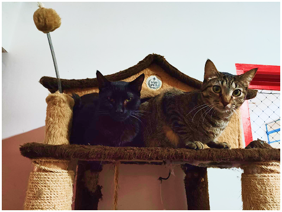

A ONG Mais Amor nasceu do coração e da determinação de Tatiane Franco, uma ativista que transformou sua compaixão pelos animais em ação. Sensibilizada com a realidade de tantos cães e gatos abandonados ou maltratados, Tatiane criou a ONG com o propósito de oferecer cuidado, dignidade e uma nova chance de vida a esses animais. Ela viu na urgência do resgate não apenas um dever, mas a chance de reescrever finais felizes, movida pela convicção de que todo ser vivo merece ser tratado com o máximo de respeito e afeto.
O caminho não foi simples. Com poucos recursos e muitos desafios, cada resgate exigiu força e dedicação. Mas a união de voluntários e apoiadores mostrou que o amor é capaz de vencer barreiras. Assim, a ONG Mais Amor cresceu e se tornou referência em Santos e região, realizando resgates, tratamentos, castrações e promovendo adoções responsáveis.
Atualmente, os resultados do trabalho da ONG são claros: a instituição resgata cerca de 395 animais anualmente e celebra cerca de 1.000 adoções bem-sucedidas, mantendo uma notável taxa de sucesso de 98%. Isso se deve à colaboração de seis parceiros dedicados à causa. A gestão da instituição é baseada na transparência, alocando 100% das doações diretamente para o bem-estar dos animais. A distribuição dos recursos reflete este compromisso sendo 65% é destinado à alimentação, 20% a cuidados veterinários e medicamentos, 10% a programas comunitários, e apenas 5% é reservado ao setor administrativo. Cada recuperação e cada lar conquistado vão além de meras estatísticas uma vez que entendemos que resgatar animais também significa mudar vidas e criar uma sociedade mais solidária e humana. Mantemos nosso compromisso de espalhar mais amor pelo mundo. criar uma sociedade mais solidária, fortalecendo o compromisso da ONG em disseminar amor e reverter o quadro de abandono, garantindo um futuro de afeto e segurança para todos os animais sob nossa responsabilidade.
🔴 Alimentação:
65%
🟠 Cuidados e Medicamentos:
20%
🟢 Programas Comunitários:
10%
🩶 Administrativo:
5%
das doações recebidas, vão para os animais e seus cuidados
É como somos avaliados pelos nossos apoiadores